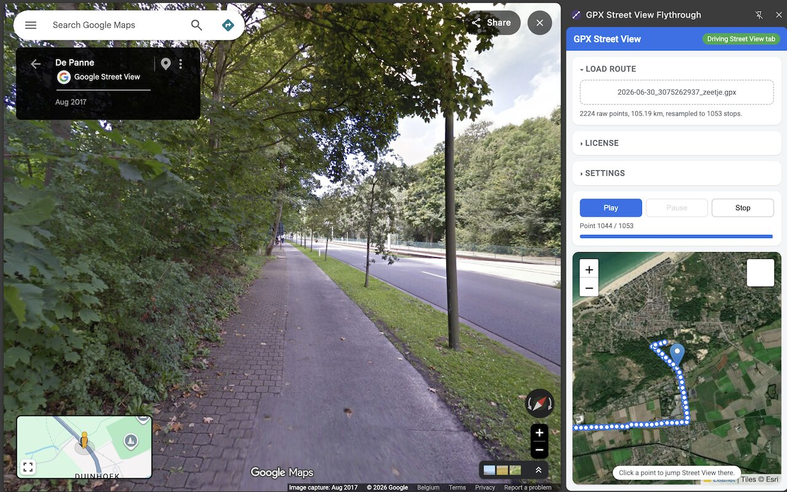

See the road before you ride it.
Upload a GPX route and play it back in Google Street View, one point at a time — with a live minimap alongside it.

What it does
- Upload any GPX file Tracks, routes, or waypoints — from Komoot, RideWithGPS, Strava, Garmin, or any GPX export.
- Automatic Street View playback The route steps through Google Street View on its own, at a pace you set.
- Live minimap, street or satellite Follows your position as you go. Click any point to jump straight there.
- Docked side panel Minimap and Street View stay visible side by side the whole time.
How to download a GPX file
A GPX file is just a small text file with your route's coordinates — every major cycling, running, and hiking app can export one. Here's how to get a GPX file from the most popular routing apps so you can preview it in Google Street View with this extension.
How to export a GPX from Strava
For a route you built in Strava's Route Builder:
- Open the route at strava.com/routes.
- Click the route to open it, then click Export GPX in the right-hand panel.
- The .gpx file downloads straight to your computer.
For an activity you already recorded:
- Open the activity on strava.com (GPX export isn't available from the mobile app).
- Click the … (more options) menu in the top right of the activity page.
- Select Export GPX.
How to export a GPX from Komoot
- Open the tour on komoot.com or in the Komoot app.
- Tap the … (more) menu on the tour page.
- Tap Export as GPX.
Completed tours can be exported by anyone; exporting a planned route before you've ridden it may require a Komoot Premium plan.
How to export a GPX from RideWithGPS
- Open the route or trip on ridewithgps.com.
- Click the Export button on the route page.
- Choose GPX as the file type and download it.
How to export a GPX from Garmin Connect
- Sign in at connect.garmin.com and open Activities or Courses.
- Open the specific activity or course you want to export.
- Click the gear/settings icon and choose Export to GPX (or Export Original).
How do I use a GPX file with this extension?
- Install the GPX Street View Flythrough extension from the Chrome Web Store.
- Open the extension and upload the .gpx file you downloaded.
- Watch your route play back automatically in Google Street View, with a live minimap alongside it.
Pricing
Free
Routes up to 50km. No account needed.
Pro — one-time purchase
Unlimited route length. Pay once, no subscription.